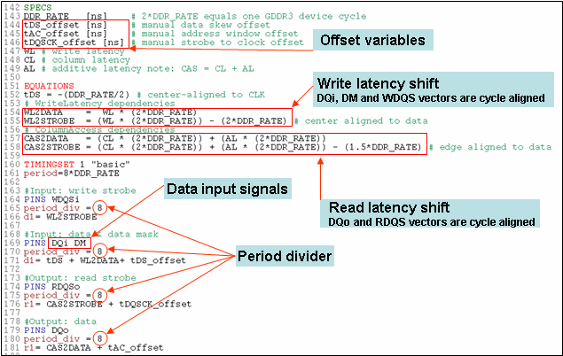
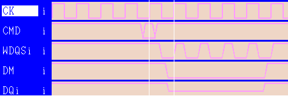

Timing setup for strobe clock domain
The timing setup example shown in the figures below includes read/write strobe, data and data mask for the strobe clock domain contains:

- Offset variables introduced for fine adjustment and to perform shmoos.
- Data input signals (DQi) signals center-aligned to the clock signal.
- A period divider (period_div) set to 8 for a typical X8-mode in "FAST" context.
- Write latency shift done in timing utilizing per-pin architecture.
The write latency for strobe and data shown in the timing setup for strobe clock domain example is determined by:
WL2DATA = WL * (2*DDR_RATE) WL2STROBE = (WL * (2*DDR_RATE)) - (2*DDR_RATE)
|
Description |
|---|---|
WL2DATA |
Write latency shift between registration of Write command and first data at device input. |
WL2STROBE |
Write latency shift between registration of Write command and first strobe toggle at device input. |
(2*DDR_RATE) |
Equals one GDDR memory device cycle. |
-(2*DDR_RATE) |
Write strobe (WDQS) starts prior to data; center aligned to data(DQi,DM). |
The below timing diagram shows the data input timing with a write latency set to 1 and a center aligned strobe (WDQS) to the data (DQi,DM).

- Read latency shift done in timing utilizing per-pin architecture.
The read latency for strobe and data shown in the timing setup for strobe clock domain example is determined by:
CAS2DATA = (CL * (2*DDR_RATE)) + (AL * (2*DDR_RATE)) CAS2STROBE = (CL * (2*DDR_RATE)) + (AL * (2*DDR_RATE)) - (1.5*DDR_RATE)
|
Description |
|---|---|
CAS2DATA |
Read latency shift between registration of READ command and first data at device output. |
CAS2STROBE |
Read latency shift between registration of READ command and first strobe toggle at device output. |
(2*DDR_RATE) |
Equals one GDDR device cycle. |
-(1.5*DDR_RATE) |
Read strobe (RDQS) starts prior to data; edge aligned to data(DQo). |